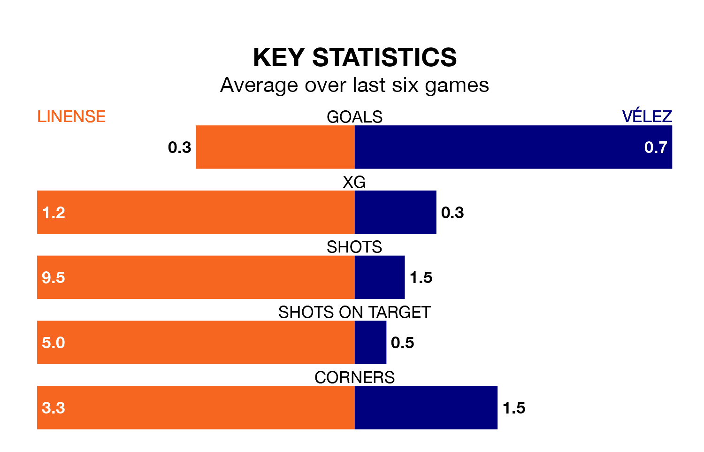

Linense are heavy favourites to keep all three points at home in Sunday's kick-off against Vélez.
Linense, who sit 10th in the Segunda División RFEF Group 4 with 28 games played, are priced at 1.3 to seal victory at Estadio Municipal de La Línea de la Concepción.
Sitting six places and three points behind them in the table, Vélez are 8.5 to win with *Betting Company*, while the draw is at 4.8.
Linense are in terrible form in the Segunda División RFEF Group 4, with no wins and two draws from their last six games.
And also with no wins and two draws over that period, Vélez's form is identical – they have both taken two points from 18.
With 26 goals in 28 games so far this season, the hosts are scoring at below the league average rate with 0.9 goals per game. And they are conceding at an average rate, letting in 29 goals at a rate of 1.0 per game.
The away side, meanwhile, are average scorers, with 1.0 goal per game. They have conceded 1.4 goals per game.
Linense's last match was on March 23, a 2-1 loss against Sevilla B, with Francisco Carbià Barrera getting the goal for Linense.
Vélez lost 3-0 against Cádiz B last time out, on March 24.
Updated: 10:31 (UTC), 31/03/24